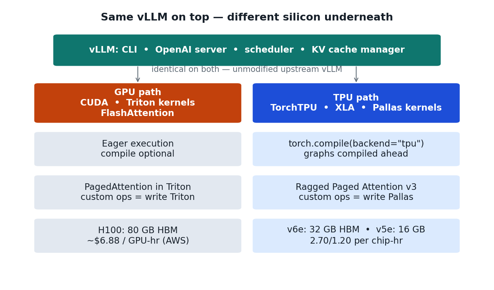
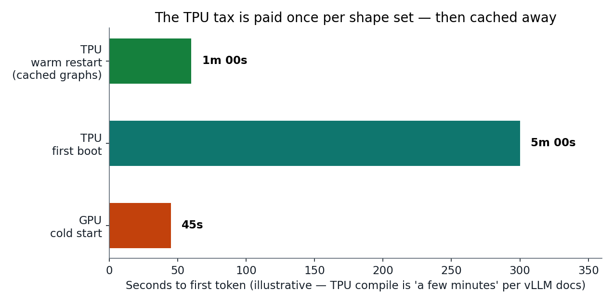
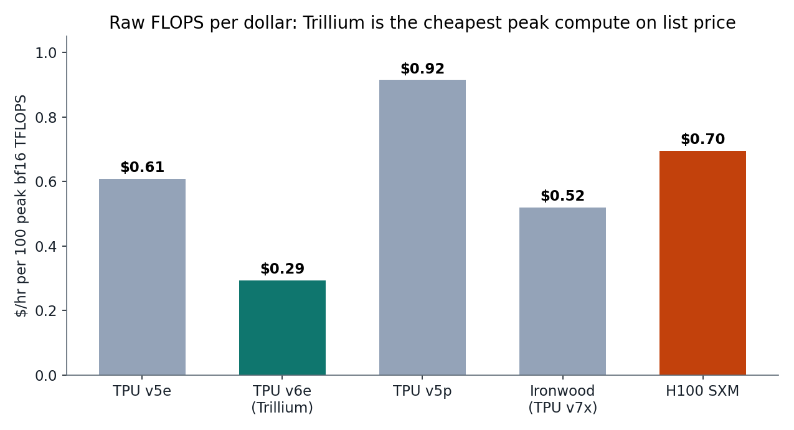
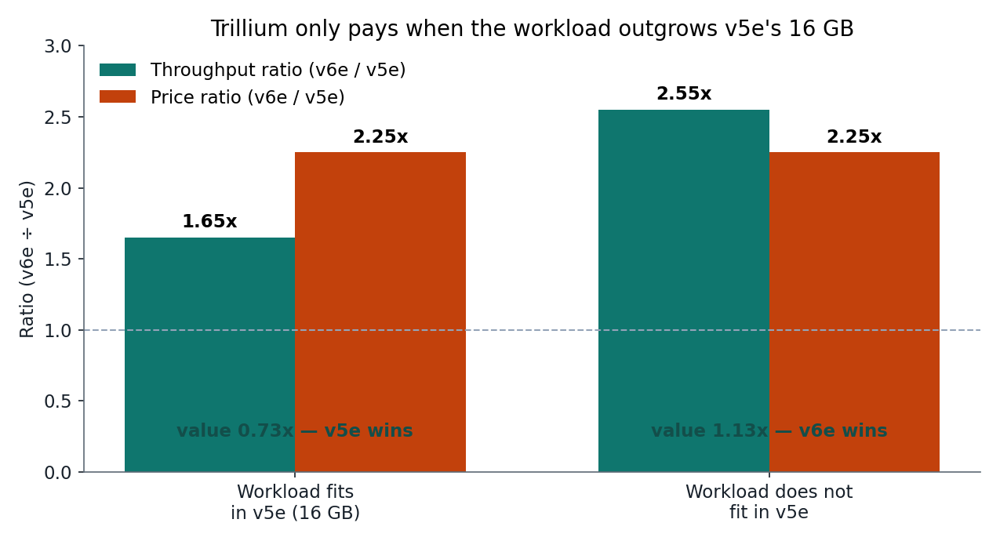

On October 20, 2026, vLLM shipped vllm-torchtpu — a new backend that runs vLLM on Google Cloud TPUs. The pitch is seductive: the same vllm serve command, the same OpenAI-compatible server, the same scheduler, now on a different chip. The pitch is also true, as far as it goes. What it leaves out is everything that actually decides your bill and your latency: a compiler that runs before your first token, a kernel library that had to be rewritten from scratch, a memory ceiling that is 5x lower per chip, and a price list where the cheapest FLOPS and the cheapest tokens are different answers. This post is the measured version — what changes, what doesn't, and the arithmetic that picks the winner for your workload.
The ELI5 version
A GPU is a flexible generalist: it runs almost any code you throw at it, right now, with no preparation. A TPU is a matrix-multiplication specialist with a translator standing in front of it. Before a TPU can serve your model, the XLA compiler translates the whole computation graph into TPU instructions — like translating a book before reading it, instead of interpreting it live. Translation takes minutes and has to be redone when the shape of the work changes. In exchange, once translated, the TPU chews through dense matrix math at a price per FLOP no GPU can touch. vLLM's new TPU backend is the adapter that lets the same serving engine talk to both kinds of silicon — but the adapter can't hide the fact that the two machines want different things from you.
What actually changes: the stack
The top of the stack does not move. vLLM's CLI, the OpenAI-compatible API server, the continuous-batching scheduler, and the KV cache manager are unmodified upstream vLLM on TPU. The change is everything underneath, and it is a full swap: CUDA and Triton kernels on the GPU side become Google's TorchTPU stack, XLA compilation, and hand-written Pallas kernels on the TPU side. vllm-torchtpu is an out-of-tree plugin — pip install vllm-torchtpu on a Cloud TPU VM with Python 3.12 — and vLLM picks it up automatically. Models run through vLLM's standard model runner and are compiled with torch.compile(backend="tpu"), which lowers the graph to XLA. Each TPU device gets its own worker process, exactly as on GPUs, and devices talk through torch.distributed.

The kernel list is the honest measure of how far the port has come. vllm-torchtpu ships custom Pallas kernels for the operations that matter most: Ragged Paged Attention v3 for MHA/GQA models, dense and sparse Multi-head Latent Attention for DeepSeek, Kimi and GLM models, Gated DeltaNet and Kimi Delta Attention for hybrid linear-attention models, fused Mixture-of-Experts with expert parallelism, and FP8, INT8, MXFP4 and NVFP4 quantized matmuls. The Pallas ragged paged attention kernel landed in PyTorch/XLA 2.7 with a measured payoff: up to a 5x speedup over the older padded multi-query paged attention implementation for Llama-3-8B, plus another ~10% from computing grouping metadata on the fly instead of precomputing it. That is the TPU equivalent of FlashAttention with paged-attention support — and until it existed, TPU serving paid a padding tax on every variable-length batch.
What is not there yet is the long tail. TorchTPU covers about 450 Aten ops, with forward and backward for the core ops behind major architectures, and custom kernels go through JAX/Pallas or the Helion DSL. If your model needs a custom op nobody has ported, on a GPU you write Triton; on a TPU you write Pallas — a smaller community, a younger toolchain, and a real porting cost. The hybrid-model question that was open in August 2026 — whether Gated DeltaNet's chunkwise associative scan runs on TPU at all — is now answered in the affirmative by the shipped Pallas kernels, but the pattern is the lesson: every new architecture family needs its TPU kernels written before it serves fast.
What actually changes: compilation
This is the difference users feel first, and the one most likely to be misread as a bug. The first startup compiles TPU graphs for the configured shapes, which the vLLM docs describe as taking "a few minutes." That is not model loading — the weights load fast. It is XLA compiling every distinct computation graph your serving configuration can produce, and it happens before the first token. Set VLLM_XLA_CACHE_PATH and the compiled artifacts are reused across restarts, so the tax is paid once per shape set, not once per boot. But XLA assumes tensor shapes are known at compile time, so a new sequence-length bucket or a new batch-size shape can trigger recompilation. TorchTPU adds bounded dynamism — only maximum shapes must be known — to cut the recompilation rate, and the notebook below works out what the cache is worth: at two restarts a day, caching saves roughly four hours a month of compile time.
There is a second, quieter compile cost. By default each collective operation compiles in its own module, which the TorchTPU team says can cost 30–40% end-to-end against the faster option that lets the compiler overlap compute and communication. And one TPU can be accessed by only one user-space process, so the RL-style colocation trick of running a trainer and an inference engine on the same device does not work out of the box. None of this is a reason not to use TPUs. All of it is a reason to budget the first boot, pin your shapes, and turn the compile cache on before you measure anything.

What actually changes: parallelism and the KV cache
All six of vLLM's parallelism dimensions are supported on TPU, on single-host and multi-host slices: tensor, data, pipeline, expert, prefill-context and decode-context parallelism. For large MoE models the vLLM team reports the best throughput from data-parallel attention with expert parallelism — for example DP=8, TP=1 with EP on a single Ironwood host — which keeps attention local to each device and spreads experts across the slice. For long contexts, prefill- and decode-context parallelism split prefill and the KV cache across devices. And vllm-torchtpu uses TPU Sync, an open-source C++ library that reads TPU device buffers directly outside the Python runtime, for two things GPUs do differently: zero-copy KV cache offloading to host DRAM, so the prefix cache for long multi-turn sessions is not limited by HBM, and disaggregated prefill/decode serving across TPU hosts with low KV transfer overhead — prefill and decode can even use different layouts, with the KV cache resharded during transfer.
The features list is, frankly, the surprise: speculative decoding (MTP, EAGLE-3, DFlash, DSpark, n-gram, suffix), automatic prefix caching including hybrid models where linear-attention state is cached alongside KV, multi-LoRA, structured outputs, and multimodal inputs are all enabled with the usual vLLM flags. The TPU backend is not a cut-down vLLM. It is the same vLLM with a different engine room.
What actually changes: the money
Google Cloud's published per-chip-hour list prices, checked September–November 2026: TPU v5e $1.20, Trillium (v6e) $2.70, v5p $4.20, Ironwood (v7x) $12.00. Against that, an H100 on AWS lists around $6.88 per GPU-hour (Qovery, October 2026). But chip-hours are not the unit that matters — FLOPS per dollar is. Divide price by peak bf16 TFLOPS and Trillium is the cheapest peak compute on the list: $0.29 per hour per 100 peak TFLOPS, against $0.61 for v5e, $0.52 for Ironwood, $0.92 for v5p, and $0.70 for the H100. Commitments compress it further: Trillium drops to $1.89 on a one-year commitment and $1.22 on three years, a 55% cut.

Peak FLOPS are not tokens, though, and the one controlled-ish comparison available makes the point precisely. A third-party measurement of Gemma 4 E2B serving (output length 128) found a single Trillium chip delivering 1.62–1.68x the throughput of a v5e chip on workloads that fit in v5e's 16 GB — and 2.32–2.77x on workloads that do not fit. Trillium costs 2.25x as much per chip-hour. Divide throughput by price and the verdict flips on fit: when the workload fits in v5e, Trillium's value is 0.73x — the cheaper chip wins. When it doesn't fit, Trillium's value is 1.13x — the bigger chip wins, because v5e pays for its small memory in spilled batches and requantization. The notebook's cost model generalizes this: cost per million tokens is set by throughput per dollar, not by FLOPS per dollar, and the memory wall is what moves throughput.

The memory wall deserves its own numbers, because it is the binding constraint on TPU serving. A v5e chip has 16 GB of HBM; a v6e chip has 32 GB; an H100 has 80 GB. An 8B model in FP8 is 8 GB of weights before a single token of KV cache exists. The notebook's KV arithmetic for an 8B GQA model at 4K-token sequences: v5e fits roughly 23 concurrent sequences, v6e about 76, the H100 about 232 — before prefix caching, before the KV offload to host DRAM that TPU Sync enables. That is why the vLLM team's MoE guidance leans on data parallelism with expert parallelism rather than tensor parallelism on TPU: spreading experts across devices is how you buy back the memory a single chip doesn't have.
What doesn't change — and the decision
The honest summary is a short list. Unchanged: the CLI, the API, the scheduler, the KV cache manager, speculative decoding, prefix caching, multi-LoRA, structured outputs, multimodal inputs. Changed: the kernel library (Pallas, not Triton), the compile step (minutes, cached), the memory per chip (16–32 GB vs 80 GB), the parallelism sweet spot (DP+EP over TP for MoE), and the price per FLOP (Trillium cheapest, H100 dearest).
So the decision rule, measured: pick the GPU when your model needs custom ops nobody has ported to Pallas, when your workload is small enough that compile time dominates serving time, or when you need the 80 GB of HBM for long contexts on one device. Pick the TPU when your workload is dense matmul serving at scale, when you can commit to capacity for the 55% price cut, and when your shapes are stable enough that the compile cache stays warm. And whichever you pick, Ironwood (v7x) is the hardware the vLLM team tests in CI on every pull request — v6e, v5e and v5p are experimental in vllm-torchtpu as of the October release. The same command runs on both. The bill, the boot time, and the kernel coverage do not.
Takeaways
- Same vLLM, different engine room.
vllm-torchtpu(Oct 20, 2026) keeps the CLI, server, scheduler and KV manager; it swaps CUDA/Triton for TorchTPU/XLA/Pallas underneath. - The compile tax is real and cacheable. First boot compiles graphs for your shapes — a few minutes — and
VLLM_XLA_CACHE_PATHmakes it a one-time cost. Budget it before you benchmark. - Kernels are the porting frontier. Ragged Paged Attention v3 (up to 5x vs padded MQPA on Llama-3-8B), MLA, Gated DeltaNet, fused MoE and FP8/INT8/MXFP4/NVFP4 matmuls are in; the next new architecture needs its Pallas kernels written.
- Cheapest FLOPS ≠ cheapest tokens. Trillium is $0.29/hr per 100 peak TFLOPS, the cheapest on list — but measured Gemma 4 E2B value is 0.73x vs v5e when the workload fits in 16 GB, 1.13x when it doesn't. Memory fit decides.
- Memory is the binding constraint. An 8B FP8 model leaves ~23 concurrent 4K sequences on v5e, ~76 on v6e, ~232 on an H100. DP+EP, not TP, is the MoE answer on TPU.
Honesty note: prices are Google Cloud / AWS published list rates checked September–November 2026 and vary by region and commitment; the H100 figure is an AWS list price via Qovery, October 2026. Gemma 4 throughput ratios are third-party measurements on one model and one output length, not a controlled A/B — read them as shape, not delta. vLLM TorchTPU is five weeks old as of this post; v6e/v5e/v5p support is experimental and the kernel list is moving. The notebook's $/1M-token figures use illustrative per-chip throughput assumptions, labelled in the code — the price and memory arithmetic is exact, the throughput is a model. No Meta content per the standing exclusion.